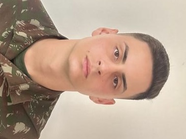

Gabriel Fernandes
Software Developer (Student)
About Me
I’m a Software Engineering student learning HTML, CSS, JavaScript and C.
Passionate about technology, problem solving and building real projects to improve my skills.
Currently improving my GitHub and preparing for future remote opportunities.
Skills
- HTML
- CSS
- JavaScript (Beginner)
- PHP (Learning)
- C
- Git & GitHub
Education
Bachelor in Software Engineering
Estácio de Sá University - January 2025 to Present
Currently studying Software Engineering, focusing on programming fundamentals, web development and problem-solving.
Technical Degree in Mechatronics
SENAI - 2021 to 2023
Technical training focused on eletronics, automation, diagnostics and mechatronic systems.
Experience
Electronics Technician – Intern and Temporary Technician
Perkons S.A (July 2021 – January 2024)
- I started at Perkons S.A. as an Electronics Technician Intern, working with mechatronics, bench testing and electronic component maintenance.
My main responsibilities included:
-
- Performing diagnostics and repair of electronic modules
- Executing bench tests and validating electronic components
- Reading and interpreting technical documentation
- Supporting preventive and corrective maintenance procedures
- Identifying failures and ensuring equipment reliability
- After one year, I was promoted to a Temporary Technician position due to my performance, discipline and technical growth.
This period strengthened my problem-solving skills, precision, and my ability to work in technical, high-responsibility environments.
Corporal (Cabo) – Brazilian Army
January 2024 – Present
- Currently serving in a Communications and IT Company, where I support the infrastructure responsible for the unit’s internal technology operations.
Main responsibilities include:
-
- Monitoring, maintaining and supporting the Company’s server
- Managing user access, workstation setup and basic network administration
- Providing technical support for computers, operating systems and communication devices
- Supporting maintenance and operation of printers, radios and internal communication systems
- Troubleshooting hardware and software issues across multiple sectors
- Ensuring availability and reliability of IT resources for military operations
- Achievements
-
- Awarded the medal of **“Praça Mais Distinta – Best Soldier of the Year”** for outstanding performance and conduct
- Promoted to **Corporal (Cabo)** in early 2024 due to technical excellence, discipline and leadership
- Strengthened critical skills such as teamwork, responsibility, resilience and problem-solving under pressure